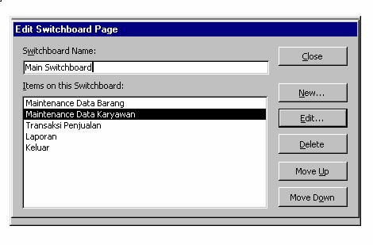

Semua Form dan Report telah selesai, sekarang kita buat Menu Utamanya. Pada Access kita dapat membuat menu utama dengan memakai SwitchBoard. Caranya :
- Pada menu bar Pilih Tools ?? Database Utilities ?? Switchboard Manager
- Akan muncul message box switchboard klik Yes
- Pada Jendela Switchboard Manager klik Edit lalu klik New
Isi Text, Command, Form Seperti di atas lalu Klik OK
Klik New
Isi Text, Command, Form Seperti di atas lalu Klik OK
Klik New
Isi Text, Command, Form Seperti di atas lalu Klik OK
Klik New
Isi Text, Command, Form Seperti di atas lalu Klik OK
Klik New
Isi Text, Command Seperti di atas lalu Klik OK

Klik Close, klik Close lagi. Maka akan terlihat Form Switchboard pada Form
Pada Form klik dua kali Switchboard, Maka akan muncul Menu Utama yang kiat buat dari Switchboard tadi
Pada Aplikasi bila dijlankan tentunya yang pertama muncul adalah menu utamanya. Untuk itu kita harus menset agar Switchboard ini alangsung muncul pada saat aplikasi kita dijalankan, Caranya yaitu :
Pada menu bar klik Tools ?? Startup pada jendela startup Setting seperti di gambar ini
Maka setiap kali anda menjalankan aplikasi ini maka yang pertama muncul dalah Switchbord yang telah anda buat.
Maka selesailah pembuatan Aplikasi ini
Copyright © Herlan Lesmana
Created with the Freeware Edition of HelpNDoc: Easily create CHM Help documents